The symmetric group  is the group of bijections of
is the group of bijections of
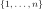
under composition. A transposition is an element exchanging two points and fixing the rest.
Every element of is a product of transpositions (the identity
being the empty product).
Induct on
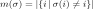
, the number of points moved. If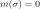
then . Otherwise
pick
. Otherwise
pick  with
with 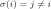
and let be the
transposition of and
be the
transposition of and  . Every point fixed by
. Every point fixed by  is
fixed by
is
fixed by 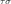
: such a is neither (which
moves) nor (for
is neither (which
moves) nor (for 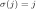
together with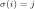
would contradict injectivity), so fixes 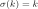
. And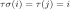
, so fixes as well.
Hence 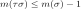
, and by induction is a product of transpositions; so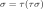
is one too.There is a unique homomorphism
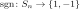
(the latter a group under multiplication) taking the value on every transposition, for
on every transposition, for
 . Explicitly
. Explicitly
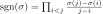
.Work in the polynomial ring
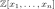
and let act on it by the substitution 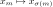
, so that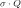
is a polynomial and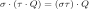
. Put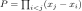
, so . Since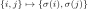
is a bijection of the two-element subsets, the factors of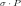
are those of up to sign:
up to sign: 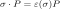
with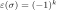
, where is the number of pairs
 with
with 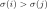
.The assignment is a homomorphism, because the action is one:
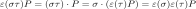
.
A transposition of
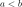
has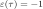
: the pairs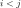
it inverts are itself and, for each
itself and, for each  with
with
 , the two pairs
, the two pairs 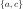
and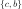
– an odd number in total. Dividing the displayed product by gives the
stated formula. Uniqueness holds because the transpositions generate
.
If is a product of transpositions and also of
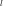
transpositions, then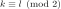
.Applying
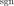
gives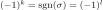
.
For the set
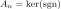
of even permutations is a normal subgroup of of index  , so
, so
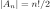
.
A kernel is a normal subgroup. Since there is a
transposition, so is surjective onto
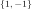
, and the first isomorphism theorem gives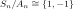
, a group of order. By Lagrange, 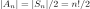
.
The sign is the determinant of the corresponding permutation matrix, and
that is not a coincidence but the same computation: both are the action
on the top exterior power, which for a permutation of coordinates is the
alternating polynomial above.